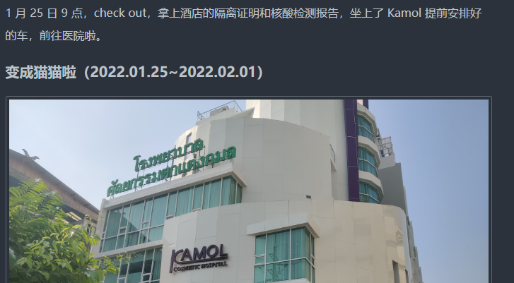
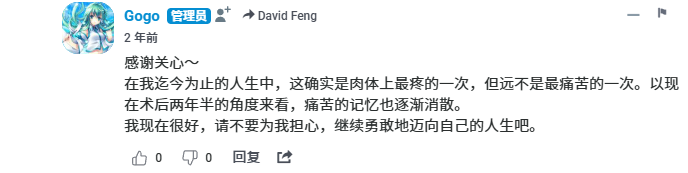

“变成猫猫啦”一篇关于SRS的故事
今天本来只是想查资料： 国内 SRS 走不通的话，我们是不是还可以去国外。
可是有一篇博客，让我愣了很久 😖：
“出发去泰国做变猫手术啦……” “变成猫猫啦！”

读到这几句话，觉得她好可爱，好像只是要去完成一个小小的童话愿望，终于要从人群里偷偷跑掉，变成一只自由的猫猫。
笑着笑着眼睛就看不清了，胸口发闷，眼泪火辣辣地往下流……
因为我们知道，那哪里是什么轻飘飘的 变猫手术…… 是麻药，是手术刀，是漫长的恢复期。 是疼痛、虚弱、感染风险和异国他乡病房里的夜晚。 是手术开始前，一遍遍告诉自己： 我不能后悔。 我已经走到这里了。 我要完成我十几年以来的愿望。
她写得那么轻。 “变成猫猫啦。”
可我听见的，是一个人在给自己壮胆。 好像只要把它叫作“变猫手术”，疼痛就会轻一点。 好像只要说“变成猫猫啦”，那些孤独、害怕、流血和无人理解的夜晚，就能被温柔地盖过去。
可是…… 可这些本不该由一个人独自承担……
一个人只是想成为自己，为什么要先被家庭审判，被制度筛选，被经济折磨，被疼痛考验？ 很多跨性别者的二十岁，是一边上课一边兼职，是一块钱一块钱攒手术费，是深夜崩溃到觉得自己真的撑不下去了。 可第二天醒来，还是擦干眼泪去上班。
因为心里只有一个念头： 我想活成我自己。
只是想有一天，终于可以用自己的身体，开始自己的人生。 然后对那种恶心的命运，轻轻、倔强、又可爱地甩出一句：
“变成猫猫啦……”
抱抱每一只走到这里的猫猫，你们都好厉害…… 愿每一只猫猫，从今以后，不只是活下来， 而是真的开始生活……

✎ KiraMyao Equal CC BY-NC-SA：本文根据 Gogo's Blog 内容改编而成
原文作者: Gogo